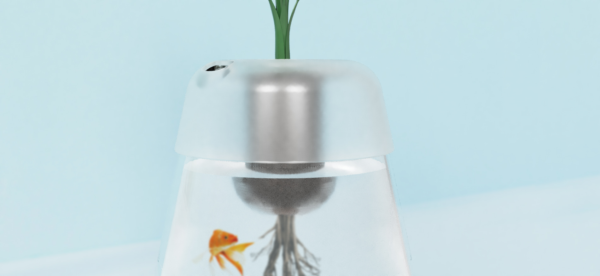
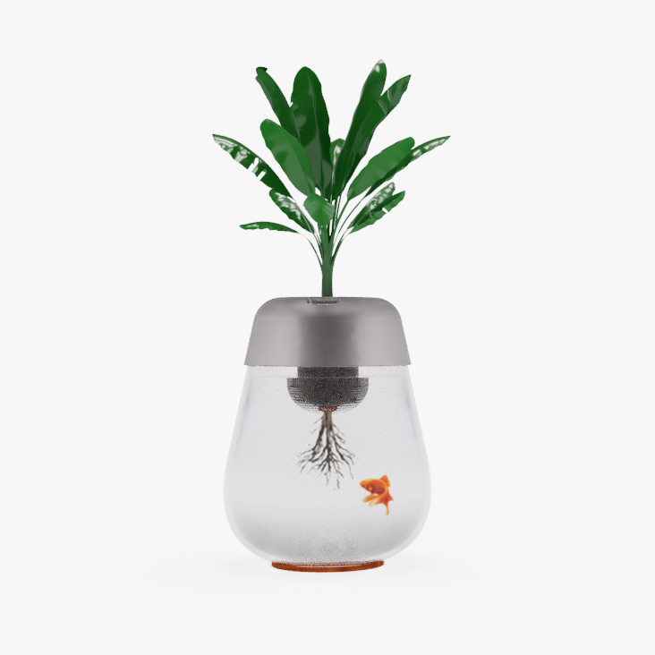
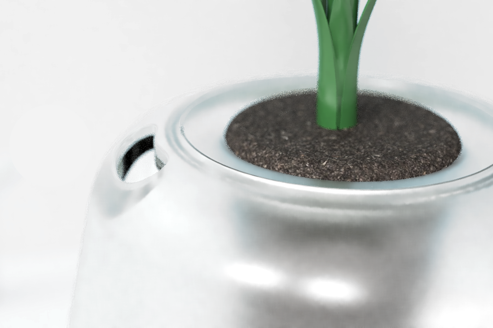
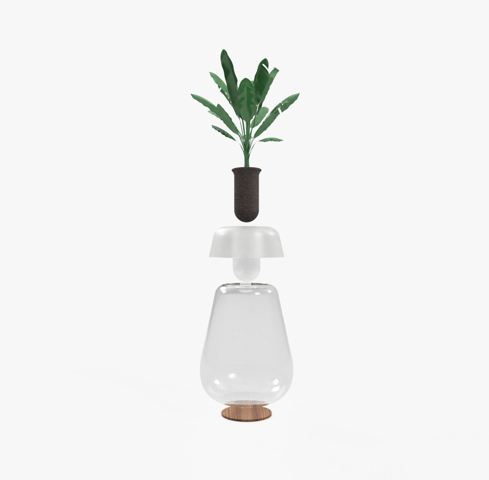

×
Aquaponics
Aquaponics is a concept of a new way of growing plants, making it easy for everyone.
Date
2017
My role
Product design
Team size
Only me

Allowing the user to see the plant's growth
view in AR Android east
view in AR iOS east
Ecosystem
Aquaponics makes it easy to grow plants while sustaining a biological ecosystem
Aquaponics is a growing method in which plants do not grow in soil, but in water. In that way, roots always have the water it needs.
In the water are fishes, and their excrement are used by the roots as fertilizer. This ensures that the water is always clean, as it is filtered by the plant.
The only human action is feeding the fish.


Parts
Transparency to better understand
The use of glass allows the users to see the roots growing, thus, better understand the growth of the plant.
This pot consists of few elements: a frosted glass upper part that holds the soil and allows the user to refill the pot ; the main glass container, in which the water and the fishes go ; a base, to ensure the glass isn’t scratched.
